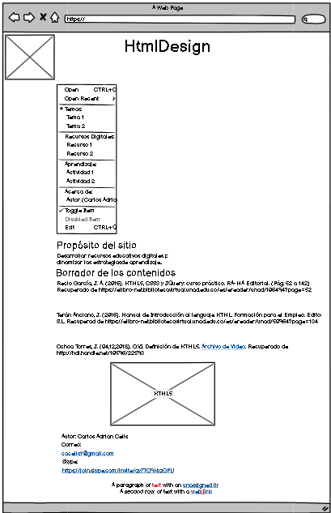

Empresa HtmlDesign
Propósito del sitio
Desarrollar recursos educativos digitales para dinamizar las estrategiasde aprendizaje..
Borrador de los contenidos
Recio García, J. A. (2016). HTML5, CSS3 y JQuery: curso práctico. RA-MA Editorial. (Pág. 52 a 142)
Recuperado de https://elibro-net.bibliotecavirtual.unad.edu.co/es/ereader/unad/106494?page=52
Terán Anciano, J. (2016). Manual de Introducción al lenguaje HTML. Formación para el Empleo. Editorial CEP, S.L.
Recuperad de https://elibro-net.bibliotecavirtual.unad.edu.co/es/ereader/unad/50964?page=134
Ochoa Torres, J. (04,12,2018). O.V.I. Definición de HTML5. [Archivo de Video].
Recuperado de http://hdl.handle.net/10596/22593>
